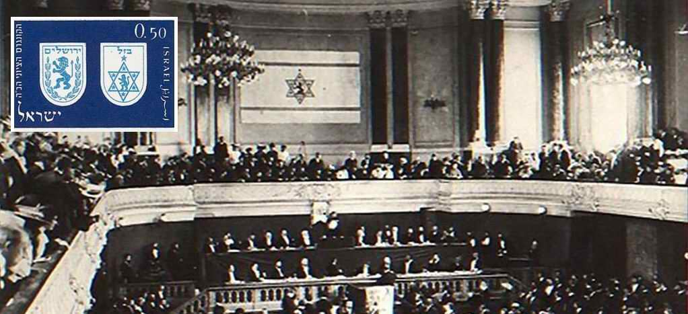
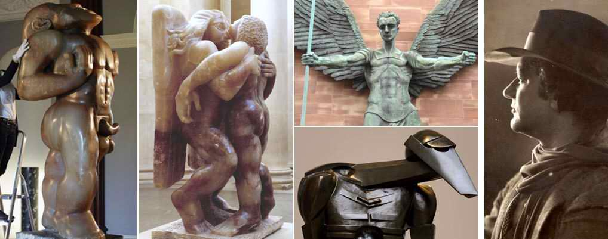
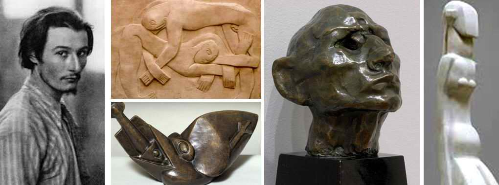
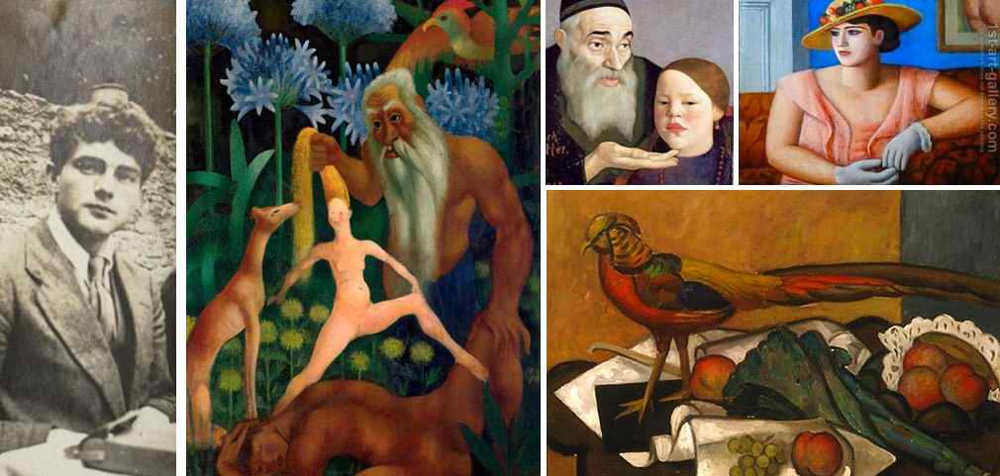
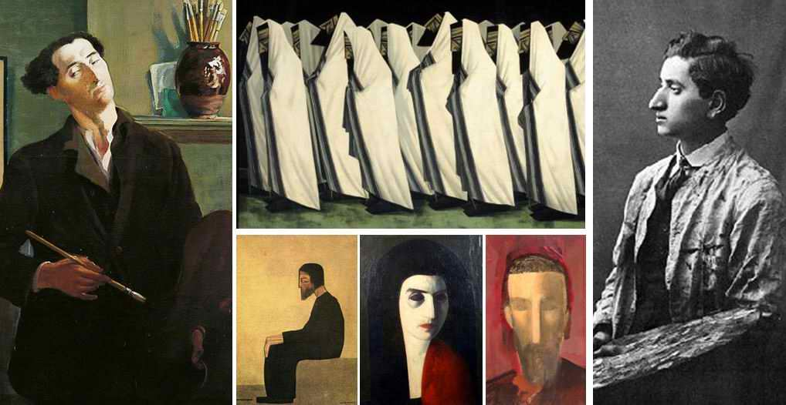
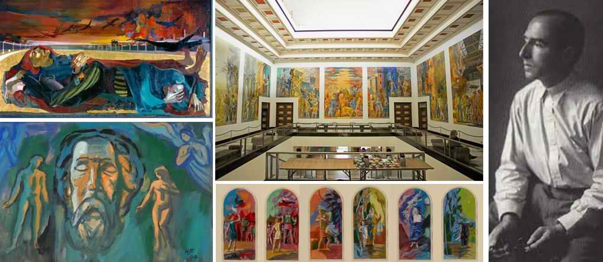
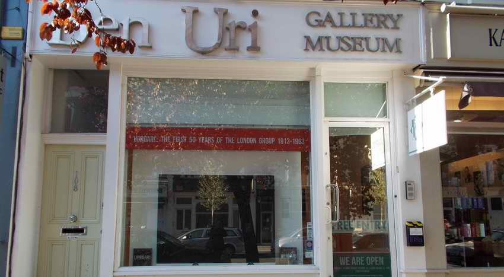

Ben Uri: 100 Years of Creative Searching
In 2015 the Ben Uri Museum in Kilburn (London, UK) will mark one hundred years since its founding. Ben Uri refers to the name of Bezalel, who, as we know, was the son of Uri, in Hebrew Ben Uri.
Bezalel Ben (Heb. son of) Uri was the master who designed and built the Mishkan (Tabernacle) of the Covenant with all its furnishings, including the Ark of the Covenant and the menorah (seven-branched lampstand), which became eternal symbols of Israel.
Streets and institutions in different cities of the world are named after Bezalel. Among them are a rehabilitation centre in New York, the famous "artists' street", Bezalel Street, in Jerusalem, and streets in Tel Aviv, Ramat Gan, Haifa and other cities of Israel.
The "revival" of his name began in 1906 in Jerusalem with the Bezalel Academy of Arts.
The creative search for the place of the Israeli artist was part of the search for identity and of the restoration of what Bezalel ben Uri was once called to (about 3,500 years ago).
The founding of this school became an organic part of the fast-growing Zionist movement, the striving of the children of Israel towards the land of their fathers. This in turn means not simply moving to another land, but a RETURN to the CALLING that God set for Israel.
Among the Jews living in the diaspora the longing to return to Zion was always widespread. The Land of Israel and Jerusalem were an inseparable part of Jewish culture and traditional rites.

From the 12th century, against the background of the persecution of Jews in Christian countries, a longing arose to return to the homeland of the fathers.
1492: the Jewish community of Palestine is joined by Jewish exiles from Spain.
In the 18th–19th centuries many documents were drawn up with the idea of returning the Jews to their historic homeland. Such ideas were expressed by the Emperor Napoleon Bonaparte, the Russian Decembrist Pavel Pestel, the Dutch prince Charles de Ligne and others.
1862: the first practical plans for creating a Jewish state are published in the books of Rabbi Zvi Hirsch Kalischer, "Seeking Zion", and Moses Hess, "Rome and Jerusalem".
1881: a large wave of modern immigration, known as the First Aliyah. Jews were then fleeing the pogroms in Eastern Europe.
Late 18th to second half of the 19th century: the movement for Jewish emancipation develops rapidly in Europe.
1868: Benjamin Disraeli, baptised but not hiding his Jewishness, becomes Prime Minister of Great Britain. This helped improve the position of the Jews of Britain.
1890: religious restrictions are removed in England; Jews become citizens with equal rights.
1881: a wave of pogroms and persecution of Jews in Russia causes mass immigration to Great Britain, enlarging the Jewish community of Britain, with London as its centre.
1887: a local (English) branch of Hovevei Zion is founded. Zionism receives strong support from the new immigrants.
1897: the World Zionist Congress (an assembly of representatives of the Jewish people) in Basel, led by Theodor Herzl.
Jewish battalions of the British Royal Fusiliers took part in the battles to free Eretz Yisrael from Turkish rule.
1917: the British government publishes the Balfour Declaration, stating its favourable view of the establishment of a national home for the Jewish people in Eretz Yisrael.
1906: Professor Boris (Baruch) Schatz founds the Bezalel Academy of Arts in JERUSALEM. It was then called "Beit Midrash le-Omanut Yehudit – Bezalel" (the Bezalel School of Jewish Art).
1913: under the influence of Schatz's Bezalel school in Jerusalem (1906), a group of radical modernist artists forms in England and is named BEN URI (Heb. Ben, son of, Uri) by Jacob Epstein (in 1954 this sculptor was knighted for his outstanding contribution to modern art).
"Ben Uri" means the same Bezalel of whose genealogy the Torah says that he was the son of Uri (ben Uri), the son of Hur, of the tribe of Yehudah. Why did Jacob Epstein not give the artists' association exactly the same name as the School of Jewish Art in Jerusalem? Perhaps he simply did not want repetition? Perhaps he had a deeper spiritual understanding of the meaning of the Hebrew words "Ben Uri", Son of the Light of the LORD. In this way he wanted to show clearly the connection of this creative group with the spiritual creative searching going on at that time in Palestine.
1926–1933: the president of the Ben Uri art society is the well-known artist Leopold Pilichowski (1869–1934) from Poland.
1915: the Ben Uri Museum was created in Kilburn (London, UK). It was created by the Jewish artist Lazar Berson to provide an artistic space for immigrant Jewish artists who at that time could not gain access to the main art societies because of the traditional obstacles faced by all immigrant minorities. In 2015 the museum will mark a hundred years since its founding.
Besides the names "Ben Uri" and "The London Jewish Museum of Art", it was given the name "The Art Museum for Everyone", apparently to "smooth over" the situation somehow (Ben Uri, The London Jewish Museum of Art, The Art Museum for Everyone).
The Ben Uri Museum also calls itself a museum of "art, identity and migration", and of course the immigrant impulse towards the British avant-garde is the dominant theme here.
Some of the artists of this museum:
Jacob Epstein (1880–1959) (a video in English here)

Henri Gaudier-Brzeska (1891–1915) (a video in English here)

Mark Gertler (1891–1939)

Jacob Kramer (1892–1962)

Hans Feibusch (1898–1998)

The Ben Uri Museum in central London holds a world-class collection. Its aim is to present Jewish art and to promote its development.
It is one of the rare museums in Europe devoted to studying the work of modern European artists of Jewish origin in a broad artistic context. The subjects of their works are not limited to Judaica and Jewish history. The museum explores social issues and cultural heritage through art and social history.

Author: Ephraim Kalish / Torah-Art